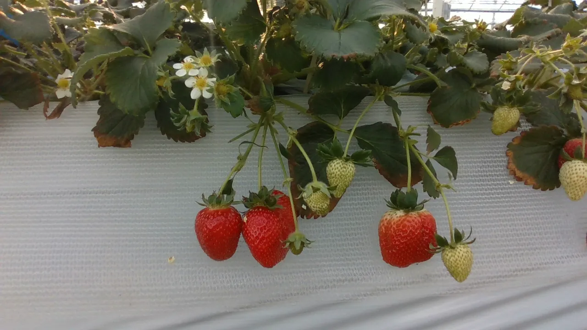

Real scenes
Captured in greenhouse environments where leaves, stems, flowers, and neighboring fruit remain part of the visual context.
A structured strawberry dataset with bounding boxes, five keypoints, ripeness labels, and occlusion labels—built from real greenhouse scenes.

Real plants create difficult vision problems: overlapping fruit, changing color, foliage, uneven light, and partial visibility. The dataset keeps those conditions instead of cleaning them away.
Captured in greenhouse environments where leaves, stems, flowers, and neighboring fruit remain part of the visual context.
One record can support localization, keypoint estimation, ripeness classification, and occlusion reasoning.
A practical starting point for agricultural perception, grading, monitoring, and robotic harvesting studies.
Each annotation describes where the fruit is, how it is shaped, and the conditions in which it appears.
Defines the visible fruit instance for detection and localization tasks.
DetectionCaptures landmark geometry for pose, shape, and grasp-related reasoning.
Keypoint estimationAdds a categorical maturity signal to support visual grading experiments.
ClassificationRecords visibility conditions so models can be evaluated beyond ideal views.
RobustnessThe same greenhouse scene can support multiple learning objectives without losing its real-world complexity.
Mature fruit remains visible alongside unripe fruit for meaningful color variation.
Visibility metadata separates clear instances from partially hidden observations.
Five landmarks add shape-aware supervision beyond a rectangular detection target.
Download the current dataset package and inspect its images and annotation records.